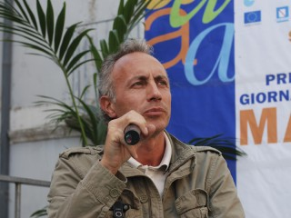
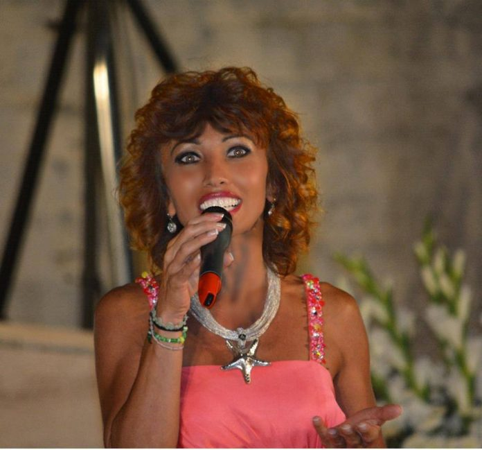
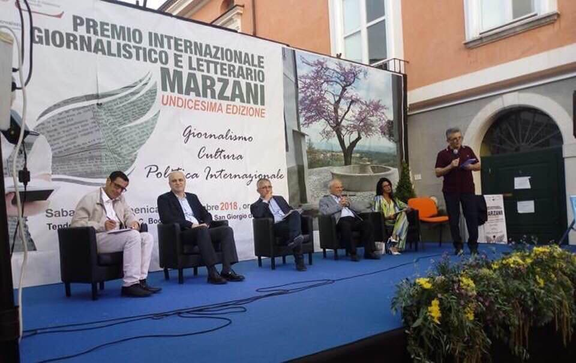
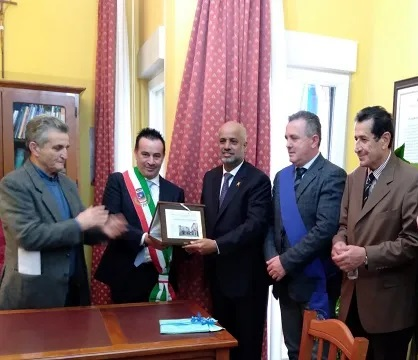
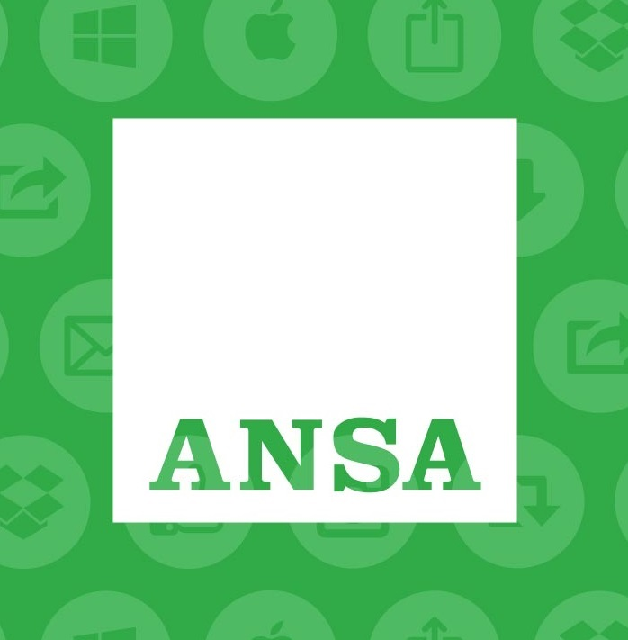
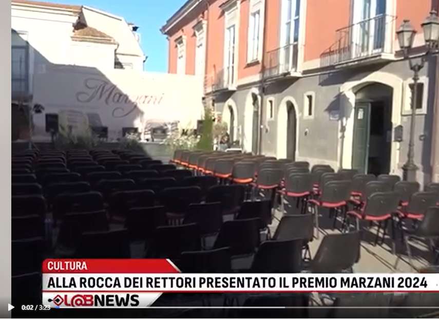
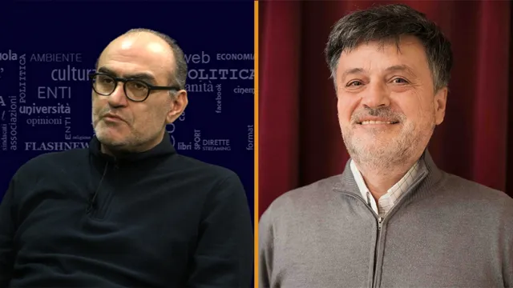
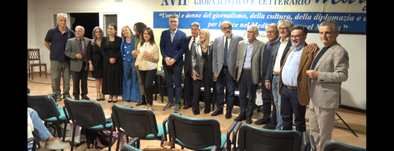
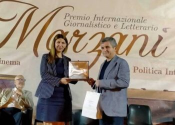

San Giorgio del S.











Via Aldo Moro,
San
Giorgio del Sannio, IT
+39 329 6203216
campaniaeuropamediterraneo@outlook.it


© Associazione Campania Europa Mediterraneo. All RightsReserved. Designed and coded by Stefano Pedicino